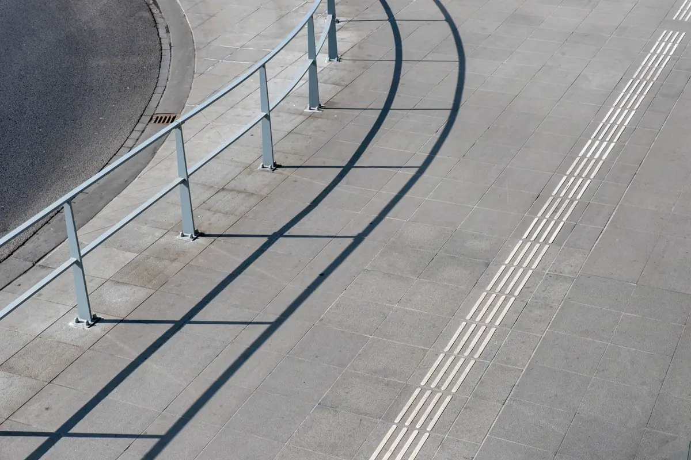
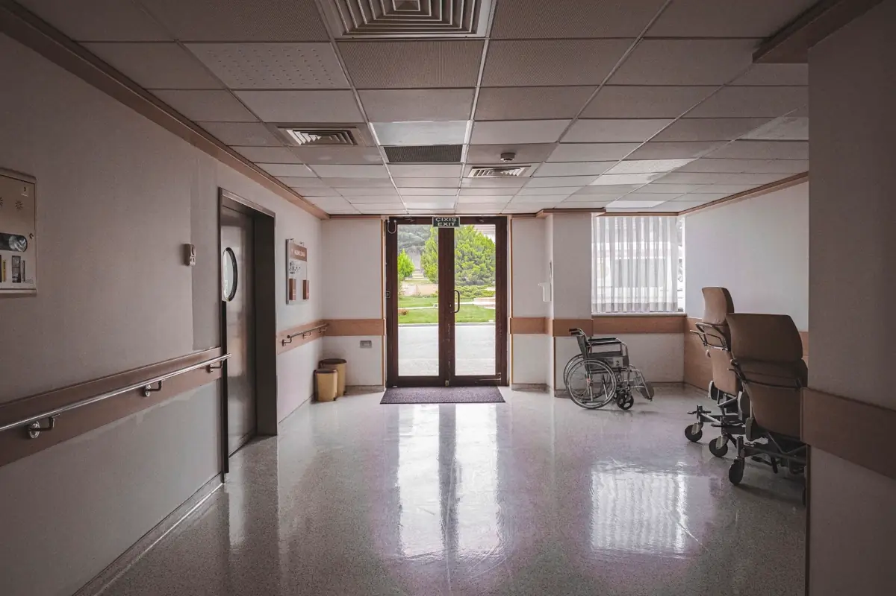

O que significa receber um ofício de acessibilidade
O Ministério Público atua na defesa dos direitos da pessoa com deficiência e costuma abrir procedimento ou inquérito civil a partir de uma reclamação. O primeiro contato é um ofício pedindo informações — e muitas vezes um laudo técnico — dentro de um prazo. Se o problema se confirma, o caminho usual é o Termo de Ajustamento de Conduta (TAC), previsto na Lei 7.347/1985: um compromisso de adequação com prazos e multa por descumprimento.
Esta página trata da parte técnica dessa resposta. A estratégia jurídica é do seu advogado; o que fazemos é dar a ele um documento de engenharia sólido. Para o escopo da vistoria item a item, veja laudo de acessibilidade NBR 9050.
Por que o laudo técnico muda o rumo do procedimento
- Separa o que é procedente do que não é — reclamação genérica vira lista objetiva de itens medidos;
- Mostra o que já está conforme — o que atende à norma deixa de ser discutido;
- Propõe prazo realista — cronograma por prioridade evita compromisso impossível de cumprir no TAC;
- Demonstra boa-fé — iniciativa técnica antes da exigência pesa a favor de quem foi notificado;
- Prova o cumprimento — ao final, o laudo de cumprimento encerra a obrigação com evidência.
Como conduzimos o atendimento
Leitura do ofício
Lemos o ofício e a reclamação com o seu advogado para entender o que foi apontado e qual o prazo de resposta.
Vistoria e diagnóstico
Vistoria completa, não só do item reclamado: o MP costuma ampliar o escopo, e é melhor saber antes. Cada barreira com medida, foto e norma.
Cronograma de adequação
Soluções técnicas por prioridade, com prazos que cabem na operação — base técnica para negociar as cláusulas do TAC.
Acompanhamento e cumprimento
Relatórios de andamento quando o TAC exige e laudo de cumprimento ao fim de cada etapa, com fotos e medição final.

Quem mais recebe notificação na Grande Vitória
| Tipo de imóvel | Pontos que costumam motivar a reclamação |
|---|---|
| Agência, loja e supermercado | Entrada com degrau, caixa sem atendimento rebaixado, falta de sanitário acessível |
| Escola e faculdade | Sala ou laboratório em pavimento sem elevador, sanitário inexistente, falta de piso tátil |
| Clínica, hospital e laboratório | Rota até consultórios, maca e sanitário, balcão alto na recepção |
| Igreja, clube e local de evento | Desnível no acesso, ausência de espaço para cadeira de rodas, rota de fuga |
| Condomínio | Degraus na entrada, elevador sem botoeira acessível, garagem sem vaga |
| Prédio público e serviço concessionado | Rota acessível completa, sinalização tátil e sonora, atendimento prioritário |
Em condomínio, o pedido de um morador ignorado é a origem mais comum. Em comércio, a notificação muitas vezes aparece junto da exigência de laudo para o alvará.

O que não fazer depois da notificação
Responder sem documento técnico
Carta dizendo que "o imóvel é acessível" sem medição nem responsável técnico não encerra nada e costuma gerar nova diligência — às vezes com vistoria do próprio órgão.
Assinar TAC com prazo que a obra não cumpre
Prazo de TAC descumprido vira multa. Uma rampa com estrutura metálica, uma plataforma elevatória ou um sanitário novo dependem de projeto, fornecedor e obra; o cronograma tem que refletir isso.
Adequar sem registro
Obra feita sem foto de antes e depois, sem medição e sem a ART de acessibilidade é difícil de comprovar. O laudo de cumprimento é o que fecha a obrigação. Os demais documentos de engenharia que podem ser pedidos no mesmo processo estão em laudos técnicos e ART.
Perguntas frequentes sobre notificação de acessibilidade
O que fazer ao receber ofício do Ministério Público sobre acessibilidade?
Procurar o seu advogado para cuidar do prazo e da resposta, e contratar logo uma vistoria técnica de acessibilidade. O laudo transforma a reclamação em uma lista objetiva de itens medidos, mostra o que já está conforme e propõe um cronograma realista para o que falta.
O que é TAC de acessibilidade?
É o Termo de Ajustamento de Conduta, previsto na Lei 7.347/1985. Nele o notificado assume o compromisso de fazer as adequações de acessibilidade em prazos definidos, normalmente com multa em caso de descumprimento. O laudo técnico é o que dá base para negociar prazos que a obra consegue cumprir.
O laudo de acessibilidade substitui o advogado?
Não. O laudo é um documento de engenharia: diz o que está conforme, o que não está e como adequar. A resposta ao órgão, a negociação do TAC e a defesa são trabalho do advogado. Os dois trabalham melhor juntos desde o início.
Como provar que o TAC foi cumprido?
Com laudo de cumprimento: nova vistoria após a obra, com medição, fotos de antes e depois e conclusão sobre cada item do cronograma, assinado por responsável técnico com ART registrada.
A vistoria analisa só o item da reclamação?
Recomendamos vistoriar o imóvel inteiro. É comum o procedimento ampliar o escopo depois da primeira resposta, e descobrir outra barreira no meio do prazo do TAC é o pior cenário. O laudo pode destacar o item reclamado e tratar os demais em etapas.
Atendimento a notificações na Grande Vitória
Laudo técnico de acessibilidade para procedimentos do Ministério Público em empresas, escolas, clínicas e condomínios:
O prazo do ofício está correndo?
Envie o ofício e o endereço do imóvel. Retornamos com escopo, prazo de vistoria e valor.